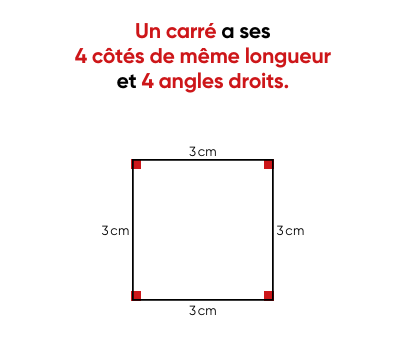

📖 La Leçon
🎮 Le Jeu
Leçon : Les formes et les angles droits

⚠️ Image
lecon.png
introuvable. Place l\'image dans le même dossier que ce fichier HTML.'">
Trouve le carré ! Glisse l'équerre et utilise le bouton rose pour la faire pivoter.
⟲
🎉 Bravo ! Tu as trouvé le carré et vérifié ses 4 angles droits ! 🎉